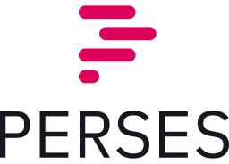
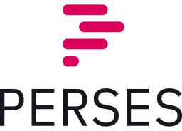

Key Features
Client-side by Design
Runs as a lightweight client, not a server — easy to integrate into existing environments without
adding
infrastructure overhead.
- No exposed server endpoints
- Data stays local — sensitive information is processed on the client
- Aligns with strict data residency and regulatory requirements
Flexible Document Formats
Documents can be authored in JSON, YAML, or JavaScript.
When JSON saved with a .js extension, JavaScript-style comments are allowed.
In addition, the MD (Markdown) format is supported, which, along with text, can include JSON/YAML documents and plugins.
At startup, OpenUniverse transforms all MD documents into JSON/YAML and extracts plugins from the Markdown.
Integrated Version Control
Version control is built directly into the platform, ensuring that every
change to systems, jobs, events, and relationships is tracked and managed.
This makes history, auditing, and rollback an integral part of how the
platform operates, not an external add-on.
- Native tracking of changes across all core components
- Enables reproducibility and reliable rollbacks
- Improves collaboration with transparent history
- Supports compliance and audit requirements out of the box
Ontology-driven Component Discovery
Components are discovered dynamically based on their tags, attributes, etc.,
rather than relying on hard-coded lists.
Relationships describe how core components interact with each other.
They are established through search queries over tags and attributes,
allowing systems, jobs, events, and processors to be linked in a
flexible and adaptive way.
- Emphasizes interactions rather than static connections
- Dynamic discovery based on component tags and attributes
- Reduces configuration complexity by avoiding hard-coded links
- Adapts naturally as environments evolve
Pre-Run Constraints
Each document can define pre-run constraints that validate conditions
before a processing loop begins. These checks act as safeguards,
ensuring that jobs and processes only start when prerequisites are met.
- Prevents faulty or unsafe executions
- Ensures environments and dependencies are ready
- Provides a clear and declarative way to enforce policies
Continuous Native Processing
Employs continuous, parallel, native processes that stream data directly:
Input: read from stdin. Output: write to stdout
This ensures seamless composition with other tools and pipelines, staying true to the UNIX philosophy.
- Native, continuous data processing
- Naturally parallel for efficiency
- Works smoothly with existing shell tools and pipelines
- Efficient, real-time data handling
- Supports both synchronous and asynchronous operations
Programming Language Agnostic
The platform is fully independent of programming languages. It can orchestrate
jobs, processes, and events regardless of whether systems use Java, Python,
JavaScript, C++, or any other language.
- Works with any programming language
- Integrates heterogeneous systems without language constraints
- Enables mixed-language workflows
- Future-proof for evolving development stacks
Universal “System” Abstraction
Everything is modeled as a system — from hardware such as IoT devices, robots and CNC machines to enterprise
databases and NGFWs.
This flexible concept makes it possible to orchestrate and observe heterogeneous environments with a single
approach.
- Unified model for diverse systems
- Reduces complexity of integration
- Scales from small devices to enterprise infrastructure
Event Triggers
Jobs and processes can be activated by events — such as calendars and schedules timepoints,
or triggered from external signals.
Triggers define when and why execution starts.
- Enables automation with or without manual intervention
- Supports time-based (schedulers, calendars) and data-driven triggers
- Reactive design for real-time responsiveness
- Unifies multiple event sources under one model
Event Processors
Event processors transform, filter, route and response on events across affected systems.
- Decouples event producers from event consumers
- Flexible filtering and transformation of event data
- Scales from simple notifications to complex event-driven pipelines
- Bridges real-time signals with system orchestration
Job as a Core Unit
A job executes a set of processes across one or many systems.
Jobs define what to run, where to run it, and which results to collect.
They provide a consistent way to express distributed execution.
- Core abstraction for orchestrating work
- Distributed execution across heterogeneous systems
- Parallelism for speed and efficiency
- Simplifies complex workflows into a single unit
Vendor-neutral Real-time Streaming
You’re not locked into a single backend tool.
Export messages asynchronously to any backend in real-time:
- Message brokers (Kafka, RabbitMQ, Redis Streams, etc.)
- Time series (Prometheus, VictoriaMetrics, Graphite, etc.)
- Search engines (Solr, OpenSearch, ElasticSearch, etc.)
- Relational databases (Oracle, Db2, Postgree, MS-SQL, MySql, etc.)
- Query and visualize your data using tools like Grafana, Perses, Datadog, Tableau, etc.
Abstract DMQ
Abstract DMQ ensures that no message is ever lost — automatically
capturing and preserving undeliverable
(“dead”) messages across the universe for recovery, analysis, and compliance.
It can use any backend for storage and management of dead messages.
- Backend-agnostic — supports any storage system (files, databases, object stores, queues)
- Message safety net — guarantees visibility into all undeliverable events
- Actionable management — inspect, triage, and reprocess messages after fixes
- Compliance-ready — maintains audit trails for regulatory and operational needs
MIT License
The platform is released under the MIT License, one of the most widely
adopted open-source licenses. It grants broad freedom to use, modify,
and distribute the software with minimal restrictions.
- Permissive and business-friendly
- Encourages adoption and community contributions
- Compatible with both open-source and commercial projects
- Simple, clear terms with no hidden limitations


 
